A two-phase, fully local private service on four macOS laptops.
Client → Private DNS (Mac 1) → HTTPS edge + TLS + load balancer (Mac 2) → Backend A (Mac 3) / Backend B (Mac 4)
Member
Enrolment No.
Machine role
Rashmi Anand
2401010374
Mac 1 — Primary DNS + client
Samiksha Jangid
2401010410
Mac 2 — nginx edge, HTTPS/TLS, load balancer
Shubhaang Kataruka
2401010450
Mac 3 — Backend A + standby edge
Ankit Raj Singh
2401010075
Mac 4 — Backend B + backup DNS
Team Scout Regiment (Team 1) · Final Report (Phase 1 + Phase 2)
Private domain: app.team1.test · LAN 10.7.0.0/19
Contents
1. Executive summary
2
2. Objectives and course-topic mapping
3
3. System architecture, topology and addressing
4
4. Request flow — layer by layer
5
5. Phase 1 — Build and Observe (Tasks A–G)
6
6. Phase 1 — Required failure demonstrations
9
7. Phase 2 — Harden, Recover and Troubleshoot (Ext A–F)
10
8. Protocol and packet analysis (saved capture)
13
9. Verification and QA summary
14
10. Final demonstration sequence
15
11. Learning summary and conclusion
15
12. Deliverables, evidence index and configuration appendix
16
1. Executive summary
We designed and built a complete private web service that runs entirely on four MacBooks sharing one
private Wi-Fi/LAN, with no cloud and no pre-configured servers. A client types the private domain
https://app.team1.test:8443; the name is resolved by our own DNS server, a TCP connection and
TLS handshake are established to an nginx reverse proxy, and the request is load-balanced to one of two REST
backends. Every protocol layer (DNS, TCP, TLS, HTTP) is proven with dig, curl and a
saved Wireshark capture. Phase 2 then hardens the same network with a backup DNS resolver, a measured
30-second TTL cutover, backend firewall isolation, passive high-availability failover and a standby edge.
Metric
Result
Machines on one private LAN
4 macOS laptops
Pre-evaluation acceptance items verified
13 of 13
Saved packet capture
57 packets, frame-indexed (mac3-full-flow.pcap)
Backend unit tests
12 of 12 pass (15.0 s)
Screenshots (integrity-checked)
61
Scope note. Every result in this report is backed by a timestamped artifact in
evidence/verification/ and the 13-item ledger reports/verification-status.json.
The faculty-injected fault (Extension F) and the individual viva are live assessment tasks; they are
rehearsed, not pre-certified.
2. Objectives and course-topic mapping
Every build task maps directly to a lecture topic. The guiding principle is: the application stays
simple, the network is the project.
Course topic
Where it is demonstrated
Moving data through the core
A client request crosses the LAN to the edge and back; captured end-to-end in Wireshark.
Translated classroom theory into a working, running network configuration.
Showed where DNS, TCP, TLS, HTTP, caching and load balancing each fit in a single request.
Proved behaviour with tools (dig, curl -v, tshark/Wireshark), not assertions.
Diagnosed failures by isolating layers (DNS, TCP, TLS, application).
3. System architecture, topology and addressing
This is a network topology, not a software architecture: each machine takes a distinct network role.
The LAN is 10.7.0.0/19, gateway 10.7.0.1, interface en0. Because the
project ran across two DHCP sessions, the LAN IPs changed between phases, but the domain names and MAC
addresses did not, which is precisely why DNS exists.
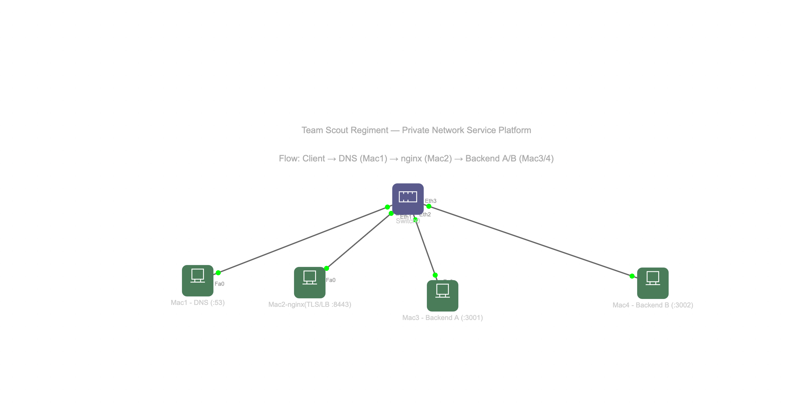
Phase 1 topology — four roles on one private LAN.
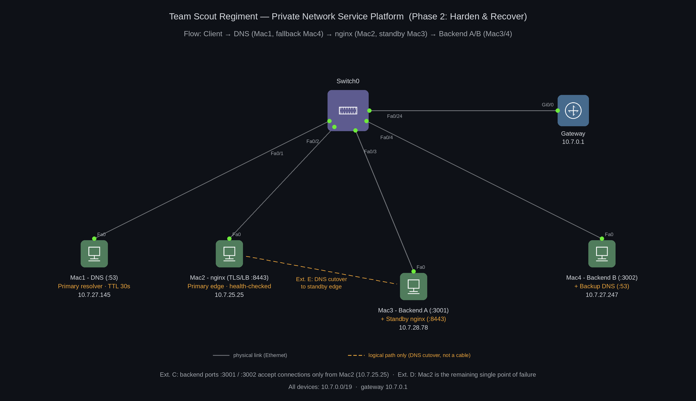
Phase 2 hardened topology — backup DNS, standby edge, firewall isolation, HA, DNS cutover.
3.1 Machine roles, addressing and cloud equivalents
Machine
Member (Enrol.)
Role
Phase 1 IPv4
Phase 2 IPv4
MAC
Cloud analogy
Mac 1
Rashmi Anand (2401010374)
Primary DNS (dnsmasq) + test client
10.7.17.21:53
10.7.27.145:53
fe:cf:32:29:21:34
Managed DNS (Route 53)
Mac 2
Samiksha Jangid (2401010410)
nginx edge — HTTPS/TLS + load balancer
10.7.7.9:8443
10.7.25.25:8443
8e:f2:4f:b4:75:a5
Cloud load balancer / CDN edge
Mac 3
Shubhaang Kataruka (2401010450)
Backend A (Flask REST) + standby edge (P2)
10.7.21.15:3001
10.7.28.78:3001
12:53:0c:44:d1:cb
App server instance A
Mac 4
Ankit Raj Singh (2401010075)
Backend B (Flask REST) + backup DNS (P2)
10.7.23.47:3002
10.7.27.247:3002
d2:f7:e1:53:a7:1f
App server instance B
All machines: prefix /19, gateway 10.7.0.1, interface en0. IP leases change between sessions; MACs and names do not.
All 12 directed paths verified. Paths toward Mac 1 initially failed because macOS stealth mode / ICMP filtering was on; after turning stealth off, every direction recovered to 2/2, 0% loss.
4. Request flow — one request, layer by layer
# A single GET https://app.team1.test:8443/api/status
1. DNS Client --> Mac 1 dnsmasq UDP/53 "app.team1.test = ?" --> 10.7.25.25 (edge)
2. TCP Client --> Mac 2 :8443 SYN --> SYN-ACK --> ACK (three-way handshake)
3. TLS Client <-> Mac 2 ClientHello --> ServerHello --> Certificate --> Finished
4. HTTP Client --> Mac 2 GET /api/status (payload now encrypted in TLS records)
5. LB Mac 2 nginx --> Backend A :3001 OR Backend B :3002 (round-robin)
6. RESP Backend --> Mac 2 --> Client JSON + X-Backend:A|B + Cache-Control (inside TLS)
Layer
Protocol
Addressing / identifier
Role in this project
Application
DNS, HTTP(S)
port 53/UDP, 8443/TCP
Name lookup; REST request/response
Session / Transport
TLS
over 8443/TCP
Confidentiality, server-certificate trust
Transport
TCP / UDP
ports 8443, 3001/3002, 53
Reliable byte stream (TCP); DNS datagram (UDP)
Network
IP
10.7.x.x (no ports here)
Host-to-host delivery across the LAN
Link
Ethernet / Wi-Fi
MAC addresses (no ports here)
Local frame delivery on the shared segment
Key idea. These layers are independent. DNS is only a directory (name to IP over
UDP/53); it does not open the connection. TCP opens the connection, TLS secures it, and only then does HTTP
carry the request. This independence is exactly what our failure demonstrations prove — DNS can fail while
the network is fine, a backend can die while the edge stays up, and a wrong port fails even when the host is
reachable.
5. Phase 1 — Build and Observe
All seven mandatory build tasks were completed and demonstrated end-to-end.
Task
What it proves
Status
Primary evidence
A
Private LAN + topology + ping between all Macs
Done
evidence/network/
B
Private DNS resolves the domain; two client resolvers
Done
evidence/dns/
C
Two REST backends with X-Backend: A/B header
Done
evidence/backends/
D
nginx round-robin load balancing
Done
evidence/nginx/
E
HTTPS/TLS termination with a trusted certificate (no -k)
Done
evidence/tls/
F
HTTP caching — Cache-Control + ETag + 304
Done
evidence/caching/
G
Wireshark: DNS, TCP handshake, TLS, encrypted data
Done
evidence/wireshark/ + .pcap
Task A — Private LAN and reachability
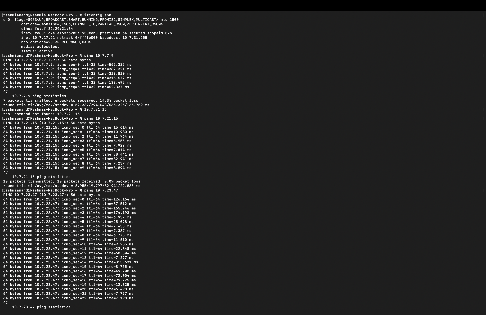
Mac 1 ifconfig en0 (IP/MAC/prefix) and successful ping to the other machines.
Task B — Private DNS server (dnsmasq) and client resolvers
Mac 1 runs dnsmasq serving the .test zone. At least two other Macs use Mac 1 as their
resolver via a scoped /etc/resolver/team1.test entry, so the app is always reached by name,
never by IP.
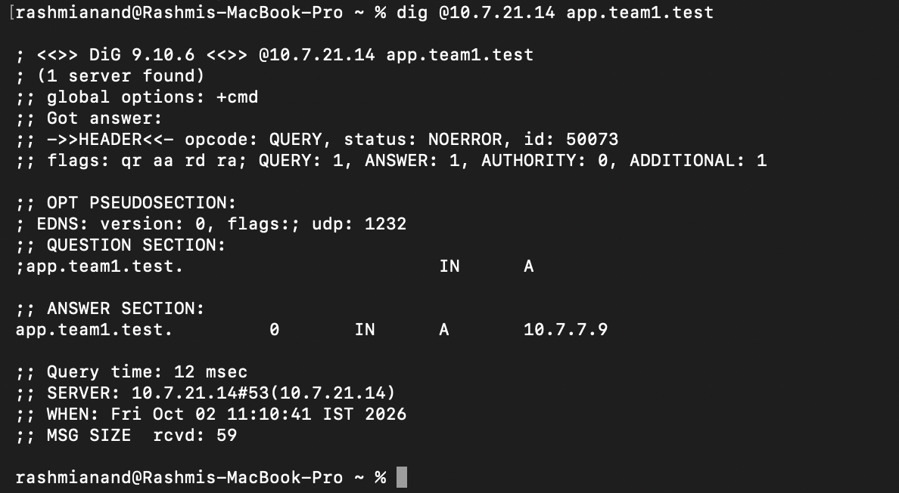
dig app.team1.test resolves to the edge IP via the team DNS server.dnsmasq address=/app.team1.test/... records.
Task C — Two REST backends (X-Backend identity)
Each Flask backend answers GET /, GET /api/status
({"backend":"A|B","status":"ok"}) and GET /api/cache-demo, and stamps an
X-Backend: A|B header so load balancing is visible. Both bind 0.0.0.0
(LAN-reachable) on fixed ports 3001 / 3002.
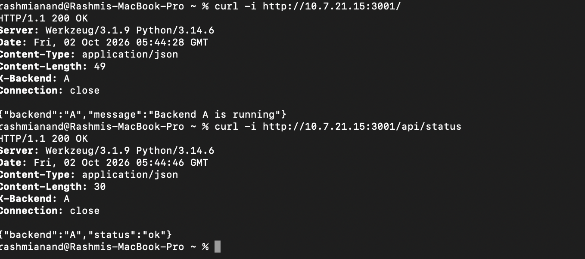
Backend A — /api/status with X-Backend: A.Backend B — /api/status with X-Backend: B.
Task D — Edge reverse proxy and round-robin load balancer
Mac 2 nginx is the single public entry point; clients never contact backends directly. The
upstream pool holds both backends and nginx distributes requests round-robin, so repeated
requests to the same name alternate X-Backend: A / B (see
evidence/nginx/https-load-balancing.txt and the HA figure in Section 7). The client never needs
the backend IPs — the edge hides them behind one name and one certificate.
Task E — HTTPS / TLS termination (trusted certificate)
A certificate for app.team1.test / api.team1.test was issued with a local CA
(mkcert, faculty-approved) and added to every client's trust store, so the final demo needs no -k
bypass. nginx terminates TLS 1.2/1.3 on 8443; the internal backend leg is plain HTTP on the LAN.
curl https://app.team1.test:8443/api/status returns 200 with a trusted certificate, no -k.
Task F — HTTP caching (Cache-Control and conditional 304)
/api/cache-demo returns Cache-Control: public, max-age=60 and an
ETag; a repeat request carrying If-None-Match receives 304 Not Modified
with no body — demonstrating a validated conditional request versus a full fresh response.
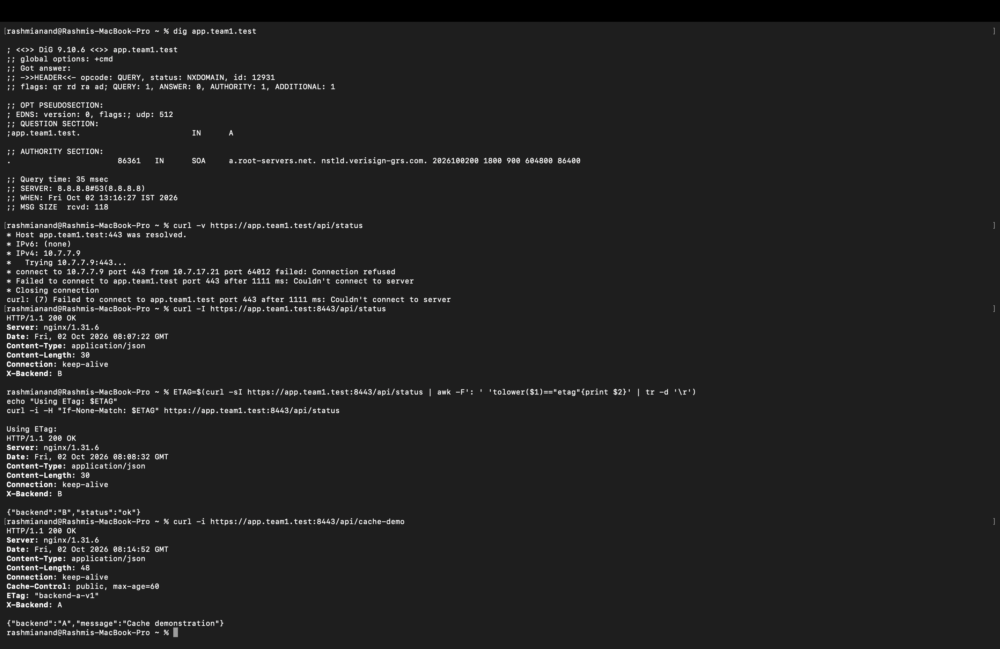
curl -I showing Cache-Control and ETag.
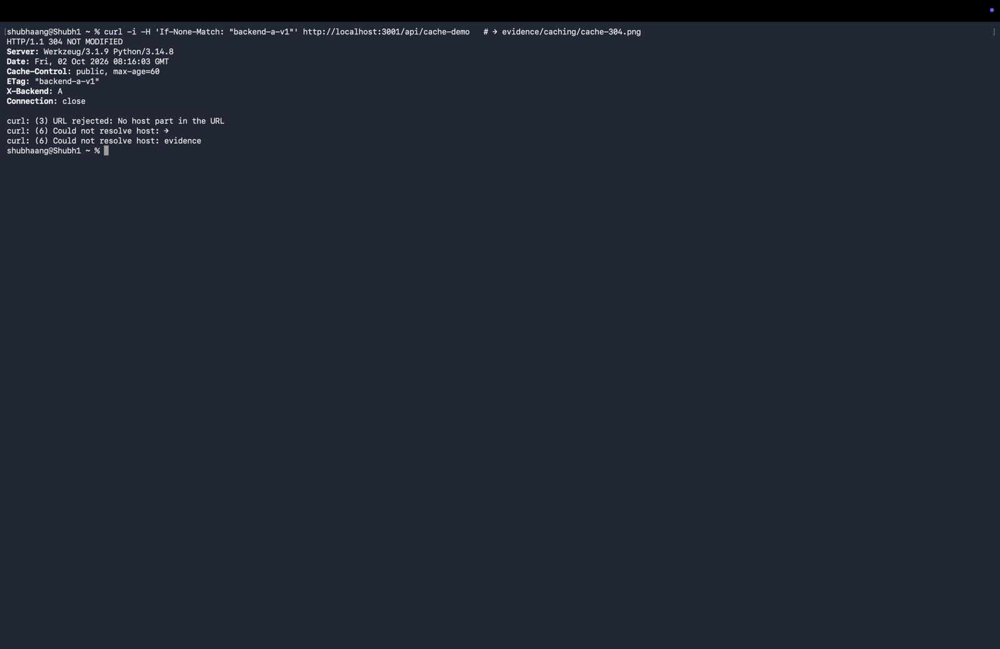
Conditional request returns 304 Not Modified.
Task G — Full protocol flow in Wireshark
DNS query/response for app.team1.test (UDP/53).TCP SYN — SEQ 0, window, MSS, options.
Three-way handshake followed by the TLS handshake.
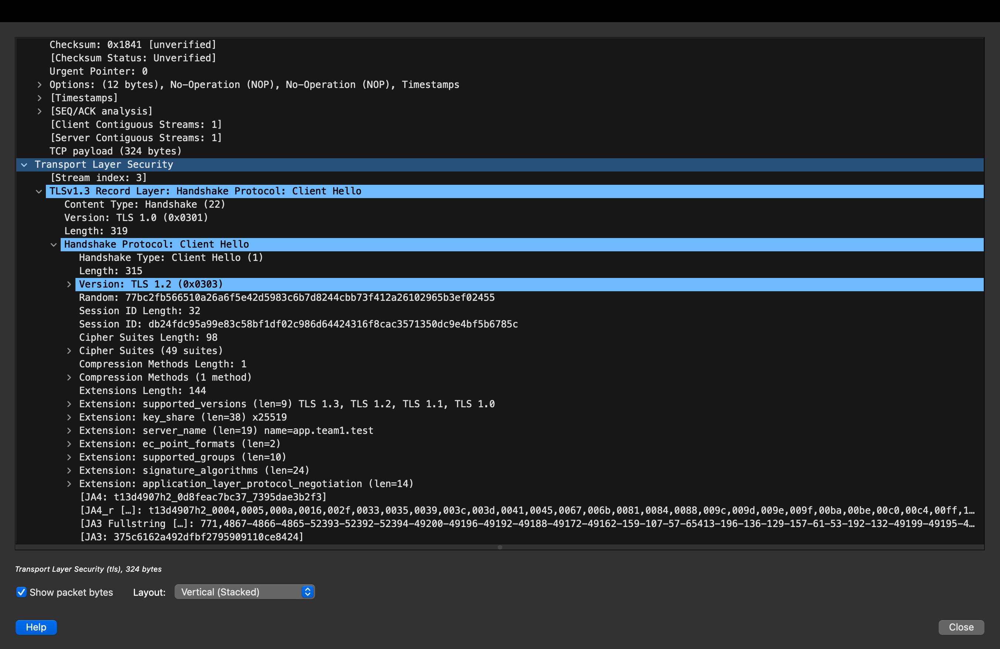
TLS ClientHello (SNI = app.team1.test); payload then encrypted.
6. Phase 1 — Required failure demonstrations
We deliberately broke the system in five ways and explained each observation, proving we understand the
layers rather than only the setup steps.
#
We broke...
Observation and what it proves
Evidence
1
Wrong DNS server (queried 8.8.8.8)
NXDOMAIN — the name fails although the host still pings. DNS and IP are independent.
wrong-dns-server.png
2
DNS record to a wrong IP
Resolves fine but the connection times out. DNS is a directory, not a connection.
wrong-dns-record.png
3
Stopped Backend A
Service continues — all requests served by Backend B.
backend-a-down.png
4
Stopped both backends
DNS/TLS still fine; nginx returns 502 Bad Gateway. Where the edge ends and the backend begins.
both-down-502.png
5
Wrong destination port
Host reachable, but the TCP connection to the service port fails. Ports and IPs are separate identifiers.
wrong-port.png
(1) Wrong resolver returns NXDOMAIN.
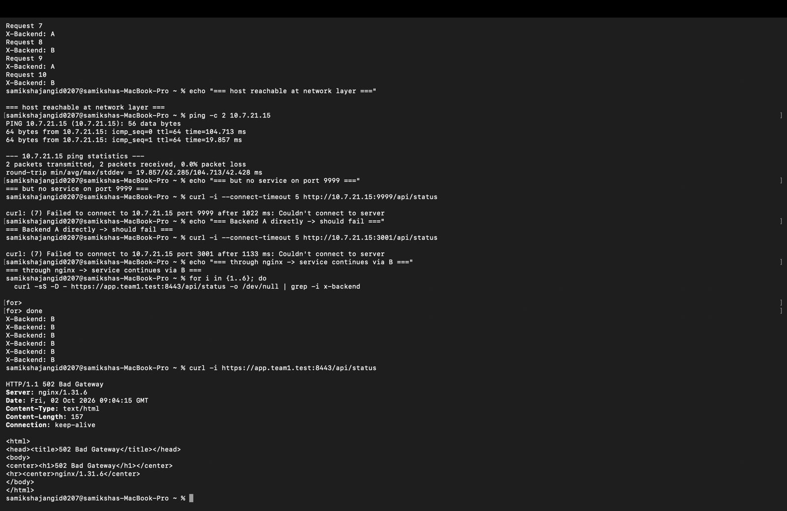
(4) Both backends down — 502 at the edge.
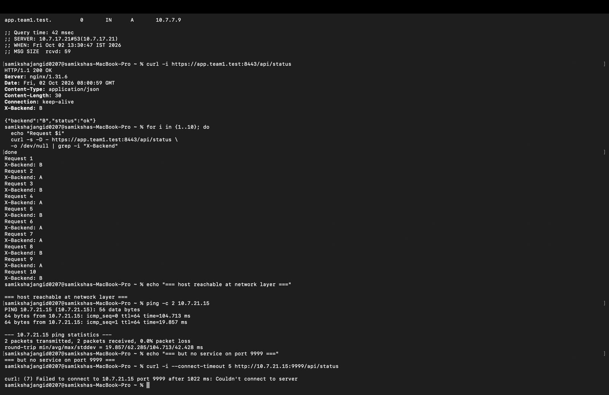
(5) Wrong port — connection fails.
7. Phase 2 — Harden, Recover and Troubleshoot
Phase 2 extends the same network; it is not rebuilt. What changed:
Area
Phase 1
Phase 2
DNS
single resolver (Mac 1)
plus backup resolver (Mac 4); 30 s TTL; ttl.team1.test record
Edge
round-robin, no failover
passive health checks (max_fails / proxy_next_upstream); standby edge (Mac 3)
Backends
open on the LAN
pf-isolated — only the edge 10.7.25.25 may reach :3001/:3002
Resilience
single points everywhere
survives primary DNS down, one backend down, edge migrated
Verified Phase 2 results (23 Nov 2026)
Ext
What it adds
Observed result (from timestamped evidence)
Status
A
Backup DNS resolver + client failover
With the primary stopped, a fresh system lookup and HTTPS 200 succeeded via the backup; the backup received the query; primary restored.
Verified
B
30 s TTL + controlled record change
Real client held the OLD answer until 31.49 s, then saw NEW (natural expiry); a separate manual flush obtained NEW at 5.25 s (before the 30 s). Both authorities restored.
Verified
C
Backend firewall isolation (edge-only)
Edge 10.7.25.25 allowed to :3001/:3002 (200); client Mac denied (curl 28 timeout); PF counters shown; owned rules + enable-token rolled back; direct access restored.
Verified
D
HA failover (passive health checks)
Balanced A/B baseline; with A down, 12 consecutive requests all 200 + X-Backend: B; after A restarts, A/B alternation resumes.
Verified
E
Controlled edge migration (DNS cutover)
Standby on Mac 3 presents the same trusted name (X-Edge: standby-mac3); synchronized DNS change sends fresh lookups to standby while cached clients briefly keep the primary; 31.44 s convergence; both DNS servers restored.
Verified
F
Faculty-injected troubleshooting
Method rehearsed (DNS, TCP, TLS, application); the actual fault, layer and fix are produced live.
Live
Extension A — Backup DNS resolver
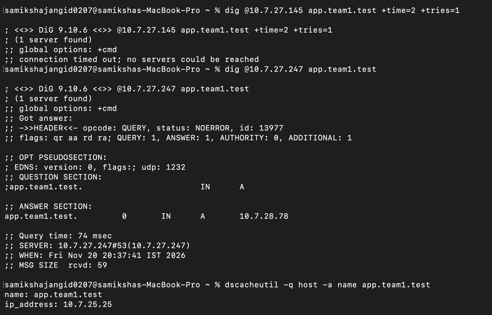
Primary DNS stopped: the primary query times out, the backup (10.7.27.247) answers, and the system resolver still resolves the name.
Extension B — DNS TTL and controlled record change
ttl.team1.test served with TTL = 30.
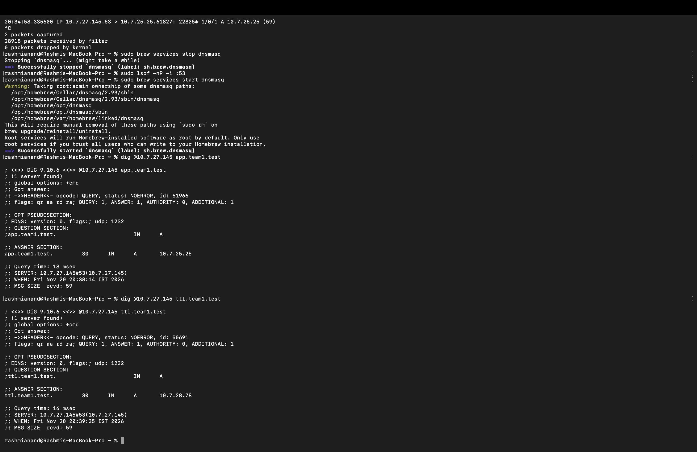
Authoritative records: app = .25.25, ttl repointed to .28.78.
Extension C — Backend service isolation (pf)
Ordinary client to :3001/:3002 is blocked (curl 28 timeout).
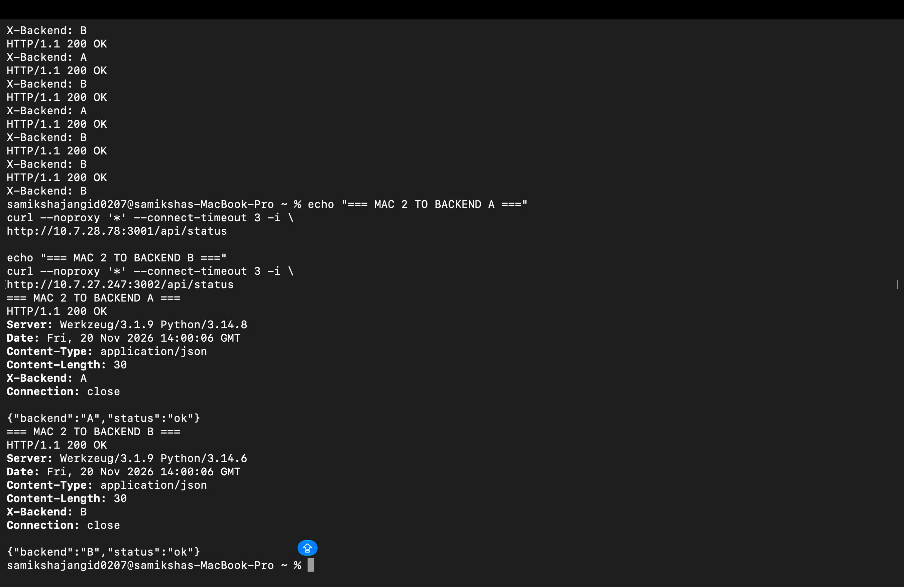
The edge (permitted source) reaches both backends: 200 + X-Backend.
Extension D — HA failover and Extension E — standby edge cutover
Backend A down: all 200 via B; A restarts: A/B alternate again.
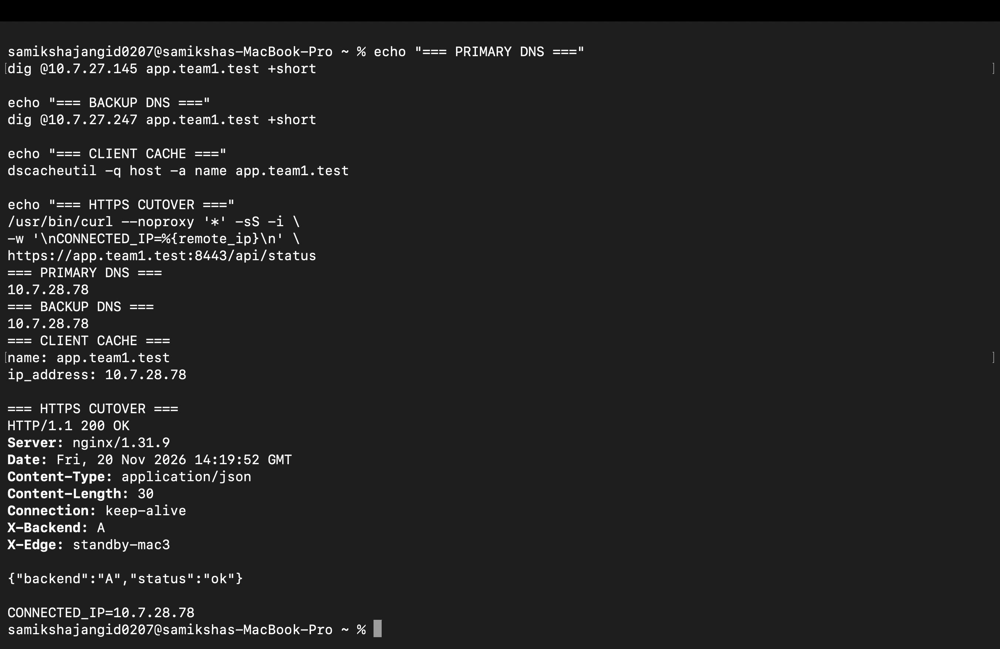
Standby edge serves trusted HTTPS 200 with X-Edge: standby-mac3 after the DNS cutover.
Remaining single point of failure. The primary nginx edge still requires an operator
DNS cutover on failure. Full automatic edge redundancy would need an always-on second edge and a floating
VIP / automatic DNS mechanism — noted and explained, not hidden.
Extension F — Faculty-injected troubleshooting (live) and failure matrix
Injected fault
Expected observation — the layer it isolates
Wrong DNS server on a client
Lookup fails though IP connectivity is fine — DNS vs IP independent.
DNS record to a wrong IP
Resolves but reaches the wrong host — DNS is a directory, not a connection.
One backend stopped
Edge keeps serving via the healthy backend (HA failover).
Both backends stopped
DNS/TLS fine; edge returns 502 — edge vs backend boundary.
Wrong destination port
Host reachable but the service-port connection fails — ports are not IPs.
Diagnosis order on demo day: name resolution, then TCP connectivity, then TLS trust, then application — narrating the reasoning at each layer.
8. Protocol and packet analysis (saved capture)
A real capture evidence/verification/mac3-full-flow.pcap (Mac 3 to edge, AirDropped to
Mac 2) preserves the full path: 57 packets, 9 772 bytes, 23 Nov 2026 07:23:14 UTC, SHA-256
99c854...aceca. Frame numbers below are from tshark with 8443 decoded as TLS.
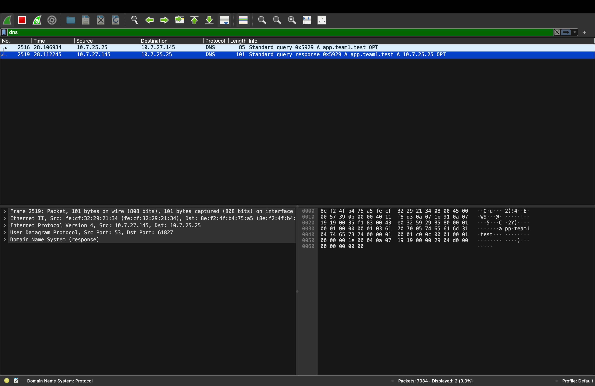
DNS query + response for the project name (UDP/53).
TLS 1.2 (0x0303), TLS_ECDHE_RSA_WITH_AES_256_GCM_SHA384; certificate SANs include app.team1.test, api.team1.test.
TCP reliability / flow control
SYN 6: relative SEQ 0, window 65535, MSS 1460, SACK permitted; SYN-ACK 7: SEQ 0/ACK 1; ACK 8: SEQ 1/ACK 1. Receive window 2059 x scale 64 = 131 776 B (receiver flow control, distinct from congestion control).
Open in Wireshark with filters dns.id==0x4d79, tcp.stream==0/1, tls.handshake.type==11, frame.number==13. Port 443 is conventional HTTPS; this project uses the permitted 8443. HTTP/2 is independently confirmed by ALPN h2 in the ServerHello.
9. Verification and QA summary
Beyond screenshots, the submission was gated by an explicit verification ledger
(reports/verification-status.json, 13 items) and an automated QA pass
(reports/final-validation.json).
Check
Result
Pre-evaluation acceptance items
13 of 13 reviewed and verified; 0 unverified
Backend source regression (unit tests)
12 methods, OK in 15.03 s
nginx integration (3 config templates)
Passed — syntax, trusted HTTPS 200/304, X-Edge/X-Backend, A/B distribution, cross-backend 304, real HTTP/2, A-down to B-only to recovered
61 images, PNG CRC checked, all unchanged from main baseline
Secrets scan
Passed — no private-key PEM committed; .gitignore covers *.pem/*.key/*.crt
Final restoration
Normal DNS restored on both servers; primary connected 10.7.25.25; trusted 200/304; no temporary cache left
Live-only items
Faculty-injected fault and individual viva (by design)
10. Final demonstration sequence (11 steps)
Show topology, the four current IPs, and the active ports/services map.
Confirm all Macs on the private LAN — ping between machines.
From a client, resolve app.team1.test to the edge via the team DNS server.
Open https://app.team1.test:8443 — trusted cert, no warnings, no IP in the URL.
Repeated requests show X-Backend: A and B alternating.
Open the saved Wireshark capture — DNS query/answer, TCP SYN/SYN-ACK/ACK, TLS ClientHello/ServerHello.
Show Cache-Control headers and a 304 Not Modified / cache hit.
Stop Backend A — all requests still succeed via Backend B; restart A and verify rebalancing.
Demonstrate Phase 2 resilience — backup DNS, TTL cache behaviour, and the standby-edge cutover.
Diagnose the live faculty-injected fault layer by layer (DNS, TCP, TLS, HTTP).
Individual viva — each member explains any component from personal understanding.
11. Learning summary and conclusion
A — Backup DNS. A second resolver adds resilience only if clients actually list it and both
servers agree on records; a cached hit is not proof of backup use. A name-service failure differs from an
application outage (the name can resolve even when no healthy app exists).
B — TTL. TTL is cache freshness, not a broadcast that forces clients to move. Natural-expiry and
manual-flush experiments distinguish the two behaviours and model real service migration / cutover delay.
C — Isolation. Filtering backend ports to the edge only prevents clients bypassing the TLS edge;
a positive edge request, a denied client request and rule counters must be shown together, then rolled back.
D — HA failover. Passive nginx detection retries eligible traffic to a healthy upstream and
suppresses the failed peer; it protects against backend failure but not edge failure (the remaining SPOF).
E — Edge migration. A trusted standby under the same name plus a synchronized DNS change is a
controlled manual cutover, not automatic failover; old-cache clients converge after the TTL.
F — Diagnosis. Different faults (wrong DNS, wrong port, trust failure, upstream 502) have
different causes; each hypothesis needs supporting evidence and an appropriate recovery check.
Conclusion. The team delivered a complete, resilient, fully local private service and
proved every layer of a single request with real tools and a saved packet capture, meeting all Phase 1 build
tasks and all Phase 2 hardening extensions, with the faculty fault and viva reserved as live assessment.
12. Deliverables, evidence index and configuration appendix
# /opt/homebrew/etc/dnsmasq.conf
listen-address=127.0.0.1,10.7.27.145
no-resolv
local-ttl=30 # Ext B — visible 30 s TTL
address=/app.team1.test/10.7.25.25
address=/api.team1.test/10.7.25.25
address=/ttl.team1.test/10.7.25.25 # repointed to .28.78 during the cutover demo
nginx — edge (Mac 2): HTTPS + LB + HA failover
upstream team1_backends {
server 10.7.28.78:3001 max_fails=2 fail_timeout=10s; # passive health checks
server 10.7.27.247:3002 max_fails=2 fail_timeout=10s;
}
server {
listen 8443 ssl; http2 on; server_name app.team1.test api.team1.test;
include /opt/homebrew/etc/nginx/tls.conf; # TLS 1.2/1.3, mkcert leaf
add_header X-Edge "primary-mac2" always;
location / {
proxy_pass http://team1_backends;
proxy_next_upstream error timeout http_502 http_503 http_504; # Ext D failover
}
}
pf — backend isolation (Mac 3, Ext C)
set skip on lo0
pass in quick proto tcp from 10.7.25.25 to any port 3001 # edge only
block in quick proto tcp from any to any port 3001 # everyone else denied
pass in all
pass out all
Report compiled 23 November 2026. Team Scout Regiment. All results
traceable to evidence/verification/ and reports/verification-status.json. The
faculty-injected fault and individual viva are live assessment tasks.